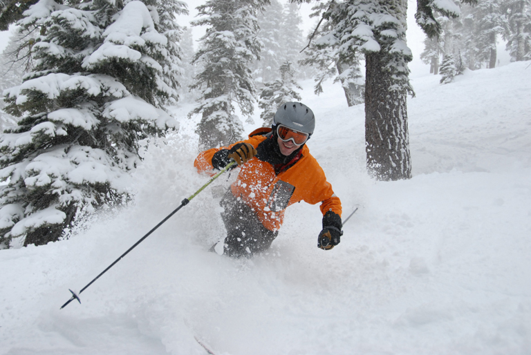

hartzell at alerce.comReal-world engineering and management experience in successful startups, dot-com ephemera, corporate behemoths and ivory tower academia. PhD in Computer Science with computational biology publications spanning more than twenty years.
Proven ability to blend computer science, applied engineering and molecular biology to produce effective solutions to real problems.
“… excellent at building and maintaining relationships with peers, direct reports, other leaders in the organization, and technology/service partners.” [Suzy Brown, CEO, Atlantes Services]
Genentech, South San Francisco, CA 2010–2012
Assembled and led the team that managed and analyzed hundreds of terabytes of next-generation sequencing data data for several thousand samples. Assembled and led the team that curated, analyzed, and published mutation data produced using various technologies over the preceding decade. Managed the department’s contributions to the company-wide effort to modernize its antibody engineering processes. Managed the Research division’s in-house operations team and represented Research to the corporate computing organizations. Member of Senior Staff and the Technical Steering Committee. Sponsored/drove migrations to modern source control systems, continuous integration systems, and automated deployment processes. Invited to represent Senior Staff at staff development events. Mentor to several programmer analysts and computational biologists.
Genentech, South San Francisco, CA 2009
Led the ongoing development of Genentech’s Mutation, Variation, and Polymorphism platform, including reverse engineering and rescuing existing data, developing a reliable set of data storage and analysis tools, and deploying those tools as both a production platform and an ad-hoc research tool.
GH LLC, Oakland, CA 2005-Current
GH, LLC provides a variety of scientific, engineering, and management services to biotech and dot-com clients. Recent engagements include engineering and computational biology projects at Nebula, Genentech and Bayer Healthcare Pharmaceuticals. Past projects include: Senior Technical Advisor to the COO at HHMI’s Janelia Farm Research Campus, recruiting a new Director of Scientific Computing & IT and helping with the interim management of the department; computational biology and automation projects at Schering AG; reviewing and critiquing the management and technical infrastructure of the computing groups within the six departments that make up the Life Sciences Division at Harvard University; and re-engineering Mark Yandell’s Comparative Genomics Library at the Berkeley Drosophila Genome Project.
Berkeley Drosophila Genome Project, Berkeley, CA 2002–2005
Built and deployed flexible and reliable automation tools for large-scale genome analyses; mentored postdoctoral students, including directed readings, code reviews, and collaborative coding and debugging sessions; collaborated on various research projects.
Atlantes Services Inc., Menlo Park, CA 1999–2001
Built the engineering team (including firmware engineers, application programmers, build/release engineers, and engineering management) for a product with wide-area wireless, web access, and embedded hardware components. Built and out-sourced our 24x7 commercial service. The service resided at a co-location facility, using their resources plus a dedicated connection to a nation-wide wireless network. Day-to-day operations were outsourced and overseen by a member of my team. Led the engineering effort that implemented the framework at the core of the company’s offering and oversaw its ongoing development. Participated in the management team, establishing company goals and direction. Instrumental in acquiring first round financing in a difficult funding environment (November, 2000).
WebTV Networks/Microsoft, Mountain View, CA 1996–1999
As an early employee at WebTV Networks I played a variety of operational and engineering roles as the company grew. Designed and built out the first two WebTV service facilities and played a key role in the later facilities. Designed and implemented the email architecture that scaled to over 1,000,000 customers. Owned, maintained, and extended several components of the UNIX-based service.
Alerce Consulting, Berkeley, CA 1992–1996
Provided support for computational biology tools, Internet connectivity and security, computational infrastructure and operations. Biotechnology clients included Genentech, Mercator Genetics, DNAX, Pangea Systems and Neomorphic Software. Software clients include Illustra Information Technologies, Netscape Communications and Streetlight Software.
Stanford Yeast Genome Project, Stanford, CA 1991–1992
Responsible for the computational components of Stanford’s effort to sequence the yeast genome. Designed the computing facility for the project and several affiliated labs. Acquired, ported, designed and implemented assembly and analysis tools to support the sequencing effort. Oversaw the development of software to integrate several robotic devices [Beckman Biomek, ABI Catalyst] into the project’s workflow. Wrote, submitted, championed and won a $300,000 grant from Digital Equipment Corporation. Managed an operations team that supported UNIX, VMS, Macintosh and PC systems.
MCD Biology, U. of CO, Boulder, CO 1986–1991
Built the department’s computing facility and collaborated with Gary Stormo on his research projects. Responsible for hardware and systems software selection and maintenance, application programming and user support Upgraded the facility from a single Pyramid 90x using serial terminals to a distributed facility built around a MIPS M–2000 and independent workstations. The facility provided tools for sequence analysis, data analysis, database management, and text processing for the department.
Yandell MD, Mungall CJ, Prochnik S, Smith C, Kaminker J, Hartzell G, Lewis S, Rubin GM. Large-Scale Trends in the Evolution of Gene Structures within 11 Animal Genomes. PLoS Computational Biology, 2(3), March 2006.
Reese M, Hartzell G, Harris N, Ohler U, Abril J, Lewis S. Genome annotation assessment in Drosophila melanogaster. Genome Research, 10(4):483–501, April 2000.
Reese M, Harris N, Hartzell G, Ohler U, Lewis S. ISMB ’99 Tutorial. The challenge of annotating a complete eukaryotic genome: A case study in Drosophila melanogaster. A tutorial given at ISMB 1999 in Heidelberg, Germany.
Ashburner M, et al. An exploration of the sequence of a 2.9-Mb region of the genome of Drosophila melanogaster: the Adh region. Genetics, 153(1):179–219, September 1999.
Florea L, Hartzell G, Zhang Z, Rubin G, Miller W. A computer program for aligning a cDNA sequence with a genomic DNA sequence. Genome Research, 8(9):967–974, September 1998.
Dietrich F, et al. The nucleotide sequence of Saccharomyces cerevisiae chromosome V. Nature, 387:78–81, May 1997.
Lipschutz R, Taverner F, Hennesy K, Hartzell G, Davis R. DNA sequence confidence estimation. Genomics, 19(3):417–424, February 1994.
Hertz G, Hartzell G, Stormo G. Identification of consensus patterns in unaligned DNA sequences known to be functionally related. Computer Applications in the Biosciences, 6(2):81–92, April 1990.
Scott M, Tamkun, J, Hartzell G. The structure and function of the homeodomain. Biochimica et Biophysica Acta: Reviews on Cancer, 989(1):25–48, July 1989.
Stormo G, Hartzell G. Identifying protein-binding sites from unaligned DNA fragments. Proceedings of the National Academy of Sciences, 86(4):1183–1187, February 1989.